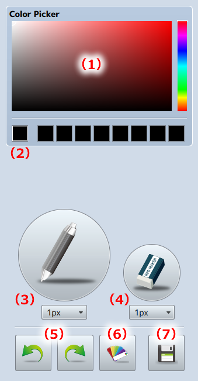

Tools
Tools
Use in the editing screens [Draw] and [Animation]. Adjust stamps selected from the palette.

- (1) Color Picker
- Select a color to use with the pen tool.
- (2) Select Color/Selection History
- The one on the left is the selected color and all the ones to the right of it are previously selected colors.
- (3) Pen Tool
- Select the line width, and draw in the color selected in the color picker.
- (4) Eraser Tool
- Draws a transparent line.
- (5) Undo/Redo
-
[Undo] ... Cancels the most recent operation on the canvas (20 Max).
[Redo] ... Restores canceled operations. - (6) Stamp Color Adjust the stamp color and brightness.
- (7) Export User Palette
- Saves the user palette. Exports sprite sheet images and JSON data.